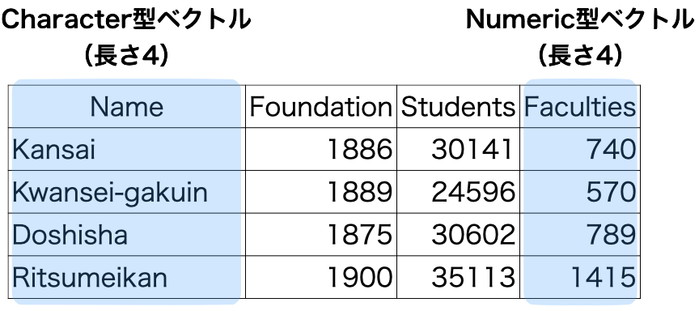

ミクロ政治データ分析実習
8/ データ構造
宋 財泫
関西大学総合情報学部
データ構造
データ構造とは
- データ構造 (data structure): 一つ以上のベクトルの集合
- ベクトルはRにおけるデータの最小単位
"Cat"や5も長さ1のベクトルであり、原子ベクトル（atomic vector）とも呼ばれ、中でもnumeric型の長さ1のベクトルはスカラー（scalar）とも呼ばれる。
- ベクトルはRにおけるデータの最小単位

データ構造の種類
本講義で使うデータ構造は主にベクトル（vector）とデータ・フレーム（data.frame）とその拡張版のティブル（tibble）のみであるため、行列（matrix）、配列（array）、リスト（array）の詳細な説明は割愛する。
- ベクトル（vector）
- 行列（matrix）
- 配列（array）
- 行列は層（layer）が1つのみの配列
- データ・フレーム（data.frame）
- ティブル（tibble） \(\leftarrow\) データ・フレームの拡張版であり、本講義で主に使用するデータ構造
- リスト（list）
- 他にもRには数百、数千種類のデータ構造があるが、その中身は実質リスト構造である場合が多い。
ベクトル
ベクトル（vector）
同じデータ型が一つ以上格納されているオブジェクト
- Rにおけるデータの最小単位
- Rには数百、数千種類のデータ構造が存在するが、その最小単位はベクトルである。
- 長さは1以上
- 一つのベクトル内の全ての要素は同じデータ型
- 優先順位はcharacter型 > numeric型 > logical型
ベクトルの操作（復習）
データ型、長さなど
class(オブジェクト名): データ型length(オブジェクト名): ベクトルの長さ（要素数）nchar(オブジェクト名): Character型の場合、各要素の文字数
要素の抽出
オブジェクト名[n]:n番目の要素を抽出オブジェクト名[n:k]:n番目からk番目の要素を抽出オブジェクト名[c(i, j, k, ...)]:i、j、k、…番目の要素を抽出オブジェクト名[c(TRUE, FALSE, TRUE, ...)]:TRUEに対応する位置の要素を抽出
Numeric型ベクトルの演算 (復習)
- ケース1: 同じ長さのベクトル同士
- 同じ位置の要素同士の演算
- ケース2: 異なる長さのベクトル同士
- 短い方のベクトルがリサイクルされる
行列（配列）
行列 (matrix)
- numeric型、またはcomplex型の縦ベクトルを横に並べたデータ構造
- 3 \(\times\) 4の行列の例
[,1] [,2] [,3] [,4]
[1,] 1 4 7 10
[2,] 2 5 8 11
[3,] 3 6 9 12- 長さ3のnumeric型縦ベクトルが4つ並んでいる模様
- 長さ4のnumeric型横ベクトルが3つ積まれているとも読めるが、データ分析では一般的に縦ベクトルの集合として行列を捉える。
行列の作成
matrix()関数を使用- 第1引数としてnumericまたはcomplex型ベクトル、
nrow引数で行列の行数を指定 - 要素が入る順番に注意
- 第1引数としてnumericまたはcomplex型ベクトル、
行列の操作
本講義では使用しないため、説明は割愛する。
行列の演算
本講義では使用しないため、説明は割愛する。
- 線形代数を勉強する人には便利な演算子
| 演算子/関数 | 説明 |
|---|---|
+ |
行列の足し算 |
- |
行列の引き算 |
%*% |
行列の掛け算 |
/ |
行列の割り算 |
* |
行列のアダマール積 (Hadamard product) |
t(オブジェクト名) |
行列の転置 |
qr(オブジェクト名)$rank |
行列の階数 |
solve(オブジェクト名) |
逆行列 |
eigen(オブジェクト名) |
行列の固有値 |
diag(オブジェクト名) |
行列の対角成分 |
配列 (array)
行列を重ねたもの
- 行列は層 (layer) が1つのみの配列
- 3次元のデータ構造であり、要素抽出の際、
[x, y, z]で指定する必要がある。- 配列から行列を抽出したら、あとは行列の同じ操作
- 3番目の
zが配列の層 (layer)を意味する
- 各層の行列の大きさは全て同じ
データフレーム
データフレーム: 紹介
- 表形式データ
- 縦ベクトルを横に並べたもの
- 一つ一つの列はベクトルであるため、一つの列は同じデータ型
- 全列が同じデータ型である必要はない。
- 行列との違い
- 列ごとに異なるデータ型が使用可能
- 列に名前が付いている（変数名）。
- 詳しい操作方法は次回以降（データ・ハンドリング）の講義で解説
データ・フレームの作成 (1)
自分で作成する場合
data.frame()、またはtibble()関数を使用tibble()関数を使う前に{tidyverse}パッケージを読み込む
データ・フレームの作成 (2)
データ・フレームを直接作成する方法
my_df1 <- tibble(Name = c("Kansai", "Kangaku", "Doshisha", "Ritsumeikan"),
Foundation = c(1886, 1889, 1875, 1900),
Students = c(27736, 23671, 25974, 32467))
my_df1# A tibble: 4 × 3
Name Foundation Students
<chr> <dbl> <dbl>
1 Kansai 1886 27736
2 Kangaku 1889 23671
3 Doshisha 1875 25974
4 Ritsumeikan 1900 32467データ・フレームの作成 (3)
ベクトルから作成する方法
Name <- c("Tokyo", "Nagoya", "Osaka", "Fukuoka")
Food <- c("Monja", "Tebasaki", "Takoyaki", "Ramen")
Pop <- c(1396, 755, 882, 511)
Area <- c(2194, 5173, 1899, 4987)
my_df2 <- tibble(Name, Pop, Area, Food)
my_df2# A tibble: 4 × 4
Name Pop Area Food
<chr> <dbl> <dbl> <chr>
1 Tokyo 1396 2194 Monja
2 Nagoya 755 5173 Tebasaki
3 Osaka 882 1899 Takoyaki
4 Fukuoka 511 4987 Ramen データ・フレームの作成 (4)
表形式ファイルの読み込み
read_csv()を使用する前に{tidyverse}を読み込んでおく（今回は読み込み済み）。- サンプルデータはLMSから入手可能
- プロジェクトフォルダーの
Dataフォルダー内のBuildingData.csvを読み込み、my_df3という名のオブジェクトとして格納dataフォルダーならdata/BuildingData.csv、プロジェクトフォルダーに直接入れたのであればBuildingData.csvのみ
# A tibble: 47 × 5
ID Pref Finance Above65 Turnout
<dbl> <chr> <dbl> <dbl> <dbl>
1 1 北海道 0.446 32.3 54.0
2 2 青森県 0.342 33.7 49.5
3 3 岩手県 0.359 33.8 55.4
4 4 宮城県 0.597 28.4 48.8
5 5 秋田県 0.311 37.6 55.6
6 6 山形県 0.362 34.0 61.9
7 7 福島県 0.522 31.8 53.4
8 8 茨城県 0.631 30.3 47.2
9 9 栃木県 0.620 29.6 47.0
10 10 群馬県 0.612 30.9 48.5
# ℹ 37 more rowsデータ・フレームの確認 (1)
class()：データ構造の確認"data.frame"以外にもいくつか出るが、"data.frame"が含まれていればOK"data.frame"に加え、"tbl_df"、"tbl"が含まれる場合、tibble（データフレームの上位互換）であることを意味する。
is.data.frame()：データ・フレームか否かを判定
nrow()/ncol()：データ・フレームの行数 / 列数
データフレームの確認 (2)
head()：最初の6行のみ出力tail()：最後の6行を出力n = 5を追加すると、最初 (最後) の5行を出力（任意の数字）
names()：変数名のみ出力
# A tibble: 10 × 5
ID Pref Finance Above65 Turnout
<dbl> <chr> <dbl> <dbl> <dbl>
1 1 北海道 0.446 32.3 54.0
2 2 青森県 0.342 33.7 49.5
3 3 岩手県 0.359 33.8 55.4
4 4 宮城県 0.597 28.4 48.8
5 5 秋田県 0.311 37.6 55.6
6 6 山形県 0.362 34.0 61.9
7 7 福島県 0.522 31.8 53.4
8 8 茨城県 0.631 30.3 47.2
9 9 栃木県 0.620 29.6 47.0
10 10 群馬県 0.612 30.9 48.5データ・フレーム: 行の抽出
データ・フレーム: 列の抽出 (1)
# A tibble: 47 × 3
Pref Above65 Turnout
<chr> <dbl> <dbl>
1 北海道 32.3 54.0
2 青森県 33.7 49.5
3 岩手県 33.8 55.4
4 宮城県 28.4 48.8
5 秋田県 37.6 55.6
6 山形県 34.0 61.9
7 福島県 31.8 53.4
8 茨城県 30.3 47.2
9 栃木県 29.6 47.0
10 群馬県 30.9 48.5
# ℹ 37 more rows[1] "tbl_df" "tbl" "data.frame"データ・フレーム: 列の抽出 (1)
[1] "北海道" "青森県" "岩手県" "宮城県" "秋田県" "山形県"
[7] "福島県" "茨城県" "栃木県" "群馬県" "埼玉県" "千葉県"
[13] "東京都" "神奈川県" "新潟県" "富山県" "石川県" "福井県"
[19] "山梨県" "長野県" "岐阜県" "静岡県" "愛知県" "三重県"
[25] "滋賀県" "京都府" "大阪府" "兵庫県" "奈良県" "和歌山県"
[31] "鳥取県" "島根県" "岡山県" "広島県" "山口県" "徳島県"
[37] "香川県" "愛媛県" "高知県" "福岡県" "佐賀県" "長崎県"
[43] "熊本県" "大分県" "宮崎県" "鹿児島県" "沖縄県" 返り値はデータ・フレームでなく、ベクトル
- データ構造がベクトルの場合、
class()はデータ型が出力される。
データ・フレーム: 抽出方法の比較
抽出方法によって返り値のデータ構造が異なる。
[]を用いた抽出は返り値がデータ・フレーム$を用いた抽出は返り値がベクトル
| コード | 意味 | 返り値 | 備考 |
|---|---|---|---|
データ・フレーム名[i, ] |
i番目の行を抽出 |
データ・フレーム | iは任意のベクトル |
データ・フレーム名[, i] |
i番目の列を抽出 |
データ・フレーム | iは任意のベクトル |
データ・フレーム名$列名 |
当該列を抽出 | ベクトル |
リスト
リスト
- あらゆるデータ構造が格納できるデータ構造
- Rに存在する多くのオブジェクトはリストであるため、Rでデータを自由自在に操るためにはリストの知識が必須
- ただし、本講義ではリストは使わない。